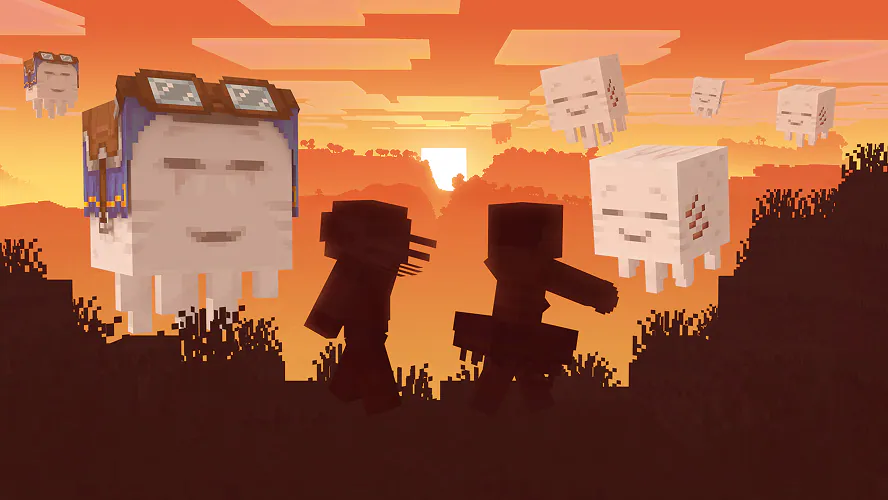

SITE OFICIAL DO MINECRAFT
Qual smurf você é? Há muitos para escolher, e no novo DLC Smurfs da Paramount e Shapescape você pode ficar azul (literalmente, espero), colocar seu chapéu branco e simplesmente relaxar na vila, livre de qualquer tipo de perigo, lutar para deter Gargamel e salvar seus companheiros smurfs!
O DLC Smurfs já está disponível no Minecraft Marketplace e eu não só jogarei esta nova aventura para explorar e conhecer outros smurfs, mas também para ver se consigo desenterrar meu smurf interior!
Experimente a alegria de voar acima do Mundo Superior com a atualização Chase the Skies! Voe com seu ghast feliz, construa alto nas nuvens, reúna uma caravana de camelos, encontre amigos aventureiros com a barra Localizador de Jogadores e muito mais. Jogue hoje!
O ghast feliz é um novo mob que prospera no Mundo Superior e permite que os jogadores voem sozinhos ou com amigos! Depois de criá-lo como um bloco de ghast seco até obter um ghastling e depois um ghast feliz e totalmente crescido, equipe-o com uma sela de ghast que pode ser tingida e voe para os céus!